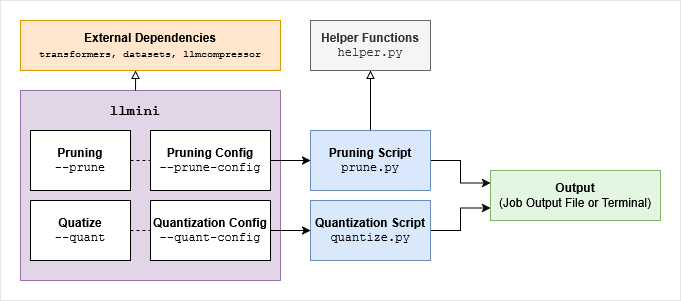
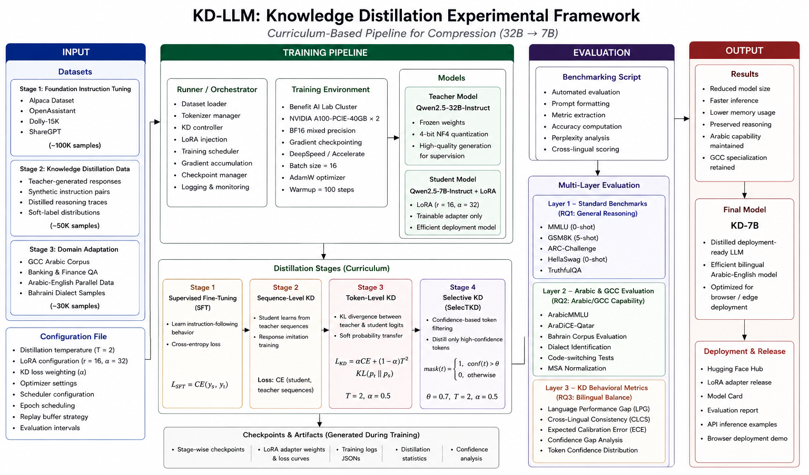
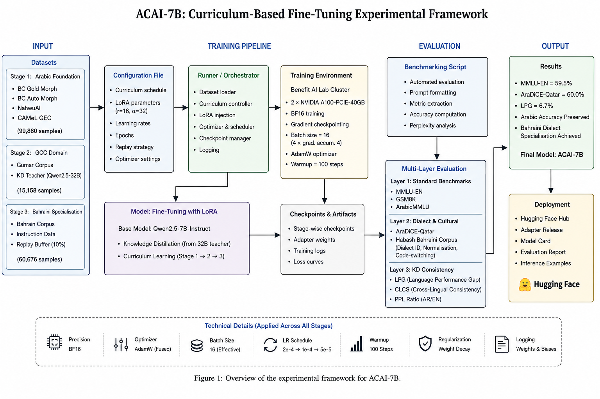
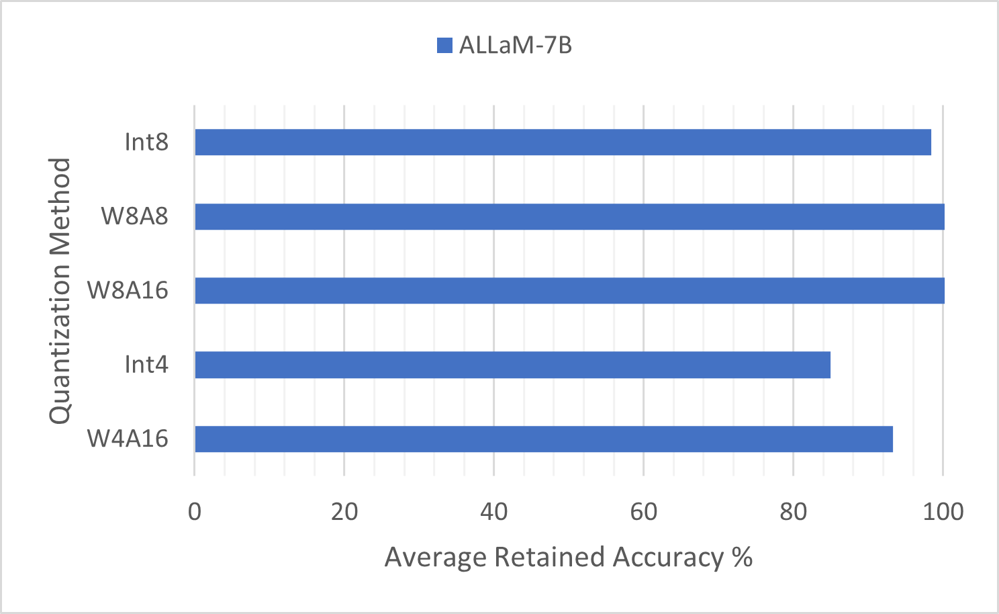
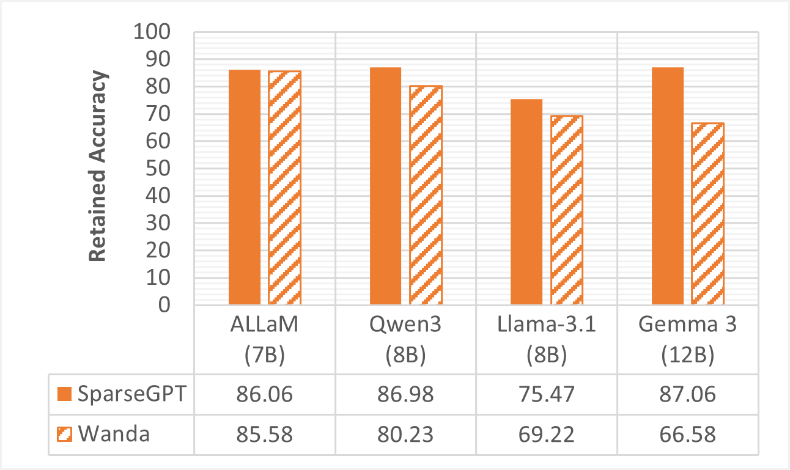
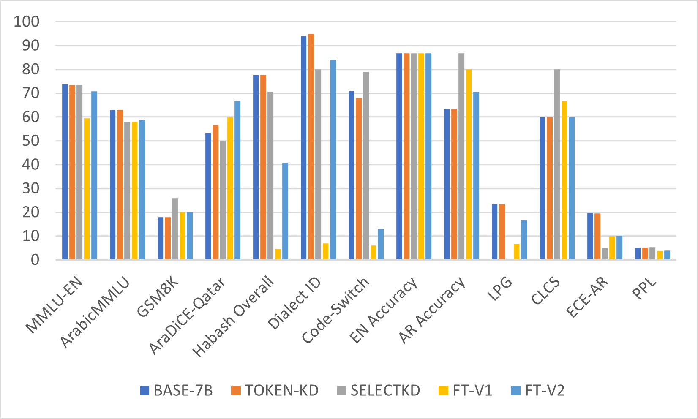
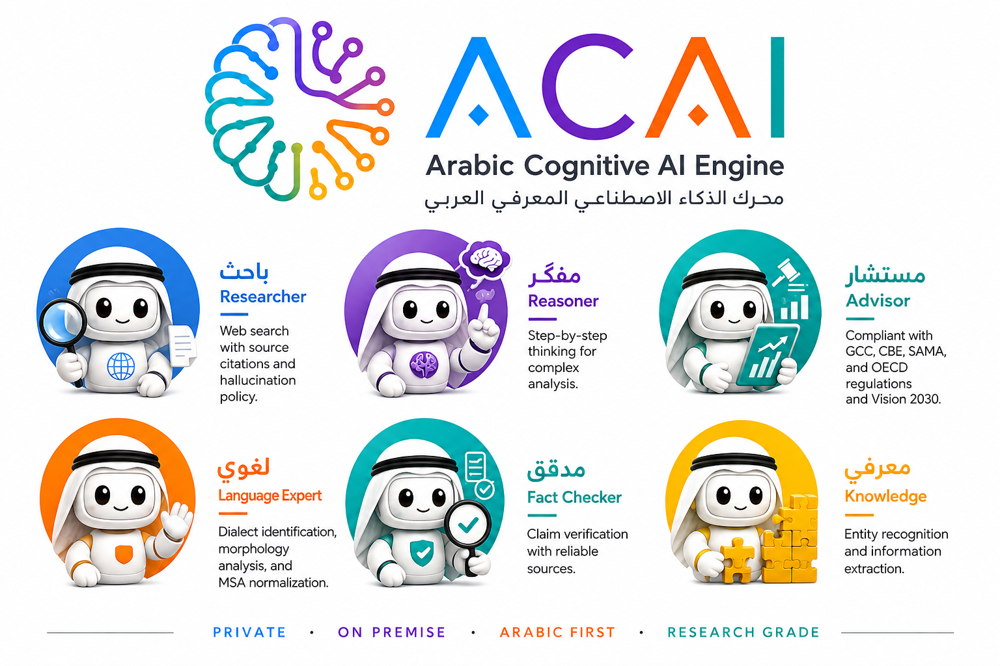

This work evaluates the effectiveness of several model compression and optimization techniques on large language models, namely quantization, pruning, and knowledge distillation, with a focus on Arabic natural language performance and browser deployment. The primary methods investigated are 8-bit and 4-bit quantization with several methods such as GPTQ, LLM.int8(), and QLoRA, SparseGPT and Wanda for pruning, and a knowledge distillation pipeline based on a Qwen2.5-32B-Instruct teacher model and a Qwen2.5-7B-Instruct student model. The proposed SelecTKD method filters low-confidence teacher tokens during token-level distillation to improve bilingual Arabic-English balance. The report concludes with a comprehensive comparative analysis between the tested compression methods, comparing their compression and accuracy tradeoff and discussing their practical effectiveness for limited- resource deployment. The study also includes staged fine-tuning to adapt the model to Arabic, GCC, and Bahraini contexts using a broad-to-specific curriculum while preserving bilingual performance.
يقيّم هذا العمل فاعليّة عددٍ من تقنيات ضغط النماذج وتحسينها على النماذج اللغوية الكبيرة، وتحديدًا التكميم (Quantization) والتقليم (Pruning) والتقطير المعرفي (Knowledge Distillation)، مع التركيز على الأداء في اللغة العربية الطبيعية والنشر داخل المتصفّح. وتشمل الطرق الأساسية المدروسة التكميم بدقّة 8 بت و4 بت عبر أساليب مثل GPTQ وLLM.int8() وQLoRA، إضافةً إلى SparseGPT وWanda للتقليم، وخطّ معالجةٍ للتقطير المعرفي يعتمد على نموذجٍ معلّمٍ Qwen2.5-32B-Instruct ونموذجٍ طالبٍ Qwen2.5-7B-Instruct. وتقوم الطريقة المقترَحة SelecTKD بترشيح الرموز المنخفضة الثقة من المعلّم أثناء التقطير على مستوى الرمز لتحسين التوازن الثنائي بين العربية والإنجليزية. ويُختتَم التقرير بتحليلٍ مقارنٍ شاملٍ بين طرق الضغط المختبَرة، يوازن بين نسبة الضغط والدقّة، ويناقش فاعليّتها العملية للنشر في البيئات المحدودة الموارد. كما تتضمّن الدراسة ضبطًا تدريجيًّا (Fine-tuning) لتكييف النموذج مع السياقات العربية والخليجية والبحرينية وفق منهجٍ يتدرّج من العامّ إلى الخاصّ مع الحفاظ على الأداء الثنائي اللغة.
- Investigate various LLM optimization techniques — quantization, pruning, distillation, and recent innovations such as QLoRA and Flash Attention — to enhance model computational efficiency.دراسة تقنيات تحسين النماذج اللغوية المختلفة — التكميم والتقليم والتقطير والابتكارات الحديثة مثل QLoRA وFlash Attention — لتعزيز الكفاءة الحاسوبية للنموذج.
- Select and adapt a leading open-source Arabic LLM (e.g., Jais, ALLaM, Fanar) for deployment within web browsers.اختيار نموذجٍ لغويٍّ عربيٍّ رائدٍ مفتوح المصدر (مثل Jais أو ALLaM أو Fanar) وتكييفه للعمل داخل متصفّحات الويب.
- Achieve at least a 50% reduction in model size while maintaining no less than 85% of the original accuracy on fundamental Arabic NLP tasks.تحقيق خفضٍ لا يقلّ عن 50% في حجم النموذج مع الحفاظ على ما لا يقلّ عن 85% من الدقّة الأصلية في مهامّ معالجة اللغة العربية الأساسية.
- Enable full offline operation by deploying the optimized model using browser-compatible frameworks such as TensorFlow.js or ONNX.js.تمكين التشغيل دون اتصالٍ بالكامل عبر نشر النموذج المُحسَّن باستخدام أُطرٍ متوافقةٍ مع المتصفّح مثل TensorFlow.js أو ONNX.js.
- Perform a comparative analysis of performance metrics — model size, inference speed, and task accuracy — before and after applying optimization techniques.إجراء تحليلٍ مقارنٍ لمقاييس الأداء — حجم النموذج وسرعة الاستدلال ودقّة المهامّ — قبل تطبيق تقنيات التحسين وبعده.
We develope a command-line tool to easily apply compression methods like quantization and pruning on any model using its Hugging Face identifier or path on the device. The framework depends on the python libraries transformers for model loading, datasets for data loading, and llmcompressor for some compression methods like GPTQ and pruning.
طوّرنا أداةً عبر سطر الأوامر لتطبيق طرق الضغط مثل التكميم والتقليم بسهولة على أيّ نموذجٍ باستخدام معرّفه على Hugging Face أو مساره على الجهاز. ويعتمد الإطار على مكتبات بايثون: transformers لتحميل النموذج، وdatasets لتحميل البيانات، وllmcompressor لبعض طرق الضغط مثل GPTQ والتقليم.

Usage:طريقة الاستخدام:
llmini [-h] [--quant {int4,int8,w4a16,w8a16,w8a8}]
[--prune {sparsegpt,wanda}] [--prune-config PRUNE_CONFIG]
model_idExamples:أمثلة:
- GPTQ int8 weights and activations quantization with SmootQuant on ALLaM-7B:
- تكميم GPTQ بدقّة int8 للأوزان والتفعيلات مع SmoothQuant على ALLaM-7B:
llmini "humain-ai/ALLaM-7B-Instruct-preview"
--quant w8a8- SparseGPT 50% unstructred pruning on ALLaM-7B:
- تقليم غير مُهيكَل بنسبة 50% باستخدام SparseGPT على ALLaM-7B:
llmini "humain-ai/ALLaM-7B-Instruct-preview"
--prune sparsegptExperimental Environmentبيئة التجارب
All experiments ran on the University of Bahrain BENEFIT Advanced AI and Computing Lab GPU cluster: two 40 GB NVIDIA A100 (Ampere 8.0) GPUs for compute-heavy work, and a single 16 GB Tesla T4 (Turing 7.5) GPU for lighter experiments. Fine-tuning used Hugging Face Transformers, PEFT, and TRL, with BitsAndBytes enabling quantized inference — compressing the 32B teacher model from roughly 64 GB down to about 20 GB so it fits the lab cluster.
أُجريت جميع التجارب على عنقود وحدات معالجة الرسوميات في مختبر «بنفت» للذكاء الاصطناعي والحوسبة المتقدّمة بجامعة البحرين: وحدتا NVIDIA A100 بسعة 40 جيجابايت (Ampere 8.0) للأعمال الثقيلة حاسوبيًّا، ووحدة Tesla T4 واحدة بسعة 16 جيجابايت (Turing 7.5) للتجارب الأخفّ. واستُخدِمت في الضبط الدقيق مكتبات Transformers وPEFT وTRL، مع BitsAndBytes لتمكين الاستدلال المكمَّم — إذ ضغطت النموذج المعلّم ذا الـ32 مليار معامِل من نحو 64 جيجابايت إلى ما يقارب 20 جيجابايت ليلائم عنقود المختبر.
Additionally, the knowledge distillation experimental framework is shown in the figure below.
إضافةً إلى ذلك، يوضّح الشكل أدناه الإطار التجريبي للتقطير المعرفي.

And the fine-tuning experimental framework is shown in the figure below.
ويوضّح الشكل أدناه الإطار التجريبي للضبط الدقيق (Fine-tuning).

Languageلغة البرمجة
ML Frameworksأُطر التعلّم الآلي
Compressionطرق الضغط
Modelsالنماذج
Evaluationالتقييم
Browser Deploymentالنشر في المتصفّح
Hardwareالعتاد
Custom Toolingأدوات مطوّرة
The primary goal — a 50% reduction in model size while preserving 85% of performance — was met by many methods: ALLaM-7B under all 8-bit quantization variants (LLM.int8(), GPTQ with and without activations) and weight-only 4-bit GPTQ, and under both SparseGPT and Wanda pruning. Pruned Qwen3-8B and Gemma3-12B also met the goal, though on the English benchmarks only.
تحقّق الهدف الأساسي — خفض حجم النموذج بنسبة 50% مع الحفاظ على 85% من الأداء — بكثيرٍ من الطرق: فنموذج ALLaM-7B حقّقه في جميع صيغ التكميم بـ8 بت (LLM.int8()، وGPTQ بالتفعيلات ومن دونها) وفي تكميم GPTQ بـ4 بت للأوزان فقط، وكذلك عند تقليمه بـSparseGPT وWanda. كما حقّقه النموذجان Qwen3-8B وGemma3-12B بعد التقليم، لكن في المقاييس الإنجليزية فقط.
Quantizationالتكميم
We apply five quanztiation methods on ALLaM-7B and evaluate with ArabicMMLU and metabench. We find that 8-bit GPTQ (W8A8 and W8A16) retained the full accuracy of the original model, while LLM.int8() (Int8) retained over 98% average accuracy retention. We also find that 4-bit GPTQ (W4A16) performs competitively with over 95% average accuracy retention, while QLoRA's double quantization (Int4) falls behind, likely due to QLoRA being designed for fine-tuning.
طبّقنا خمس طرقٍ للتكميم على ALLaM-7B وقيّمناها باستخدام ArabicMMLU وmetabench. وجدنا أن GPTQ بدقّة 8 بت (W8A8 وW8A16) حافظ على الدقّة الكاملة للنموذج الأصلي، بينما حافظ LLM.int8() (Int8) على أكثر من 98% من متوسّط الدقّة. كما وجدنا أن GPTQ بدقّة 4 بت (W4A16) يقدّم أداءً تنافسيًّا بنسبة حفظٍ تتجاوز 95% من متوسّط الدقّة، في حين يتراجع التكميم المزدوج في QLoRA (Int4)، وذلك على الأرجح لأن QLoRA مُصمَّمٌ أساسًا للضبط الدقيق.

Pruningالتقليم
We apply two pruning methods on ALLaM-7B, Qwen3-8B, Llama3.1-8B, and Gemma3-12B and evaluate with ArabicMMLU and metabench. We find that SparseGPT retains more of the original accuracy accross all models, and that the gap between SparseGPT and Wanda varies by model architecture.
طبّقنا طريقتَي تقليمٍ على ALLaM-7B وQwen3-8B وLlama3.1-8B وGemma3-12B وقيّمناها باستخدام ArabicMMLU وmetabench. وجدنا أن SparseGPT يحافظ على قدرٍ أكبر من الدقّة الأصلية عبر جميع النماذج، وأن الفجوة بين SparseGPT وWanda تتفاوت بحسب معمارية النموذج.

Knowledge Distillation and Fine-tuningالتقطير المعرفي والضبط الدقيق
The figure below compares the baseline, knowledge distillation, and fine-tuned models across multilingual reasoning, Arabic/GCC evaluation, bilingual consistency, and perplexity. The figure shows that the KD models provide a strong initialization for bilingual Arabic-English performance, while the fine-tuned variants shift the model toward different strengths depending on the training strategy. SelectKD gives the strongest bilingual balance among the KD baselines, as reflected by its low LPG and high CLCS.
يقارن الشكل أدناه بين النموذج المرجعي ونماذج التقطير المعرفي والنماذج المضبوطة عبر الاستدلال المتعدّد اللغات، وتقييم العربية/الخليجية، والاتساق الثنائي اللغة، والحَيرة (Perplexity). ويبيّن الشكل أن نماذج التقطير المعرفي توفّر تهيئةً قويّة للأداء الثنائي بين العربية والإنجليزية، في حين تدفع النسخ المضبوطة النموذج نحو مواطن قوّةٍ مختلفة تبعًا لاستراتيجية التدريب. وتمنح SelectKD أقوى توازنٍ ثنائي اللغة بين أُسس التقطير، كما يتجلّى في انخفاض LPG وارتفاع CLCS.

Among the fine-tuned models, FT-v1 preserves bilingual consistency more effectively, whereas FT-V2 achieves stronger results on MMLU-EN, AraDiCE-Qatar, and Habash-based tasks. This indicates that staged fine-tuning improves dialect specialization, but the final behavior depends on whether the model is optimized for balance or for task-specific adaptation. In addition, the fine-tuning dataset was designed to support Bahraini specialization for deployment purposes. Because the dataset was largely derived from Bahraini series and television show transcripts, it strongly shaped the model’s behavior toward dialectal generation. As a result, the model gained Bahraini dialect knowledge but showed weaker analytical ability. To mitigate this limitation, instruction-format data was incorporated into FT-V2.
ومن بين النماذج المضبوطة، يحافظ FT-v1 على الاتساق الثنائي اللغة بفاعليّةٍ أكبر، بينما يحقّق FT-V2 نتائج أقوى في MMLU-EN وAraDiCE-Qatar والمهام المعتمدة على Habash. ويشير ذلك إلى أن الضبط الدقيق التدريجي يحسّن التخصّص اللهجي، إلا أن السلوك النهائي يعتمد على ما إذا كان النموذج محسَّنًا للتوازن أم للتكيّف مع مهمّةٍ بعينها. كما صُمِّمت بيانات الضبط الدقيق لدعم التخصّص البحريني لأغراض النشر. ولأن البيانات استُمِدّت إلى حدٍّ كبير من نصوص المسلسلات والبرامج التلفزيونية البحرينية، فقد وجّهت سلوك النموذج بقوّةٍ نحو التوليد اللهجي. ونتيجةً لذلك اكتسب النموذج معرفةً باللهجة البحرينية لكنه أظهر قدرةً تحليليّةً أضعف. وللتخفيف من هذا القيد، أُدمِجت بياناتٌ بصيغة التعليمات في FT-V2.
We develope ACAI, the Arabic Cognitive AI Engine — an offline web application that locally deploys our compressed models for Arabic use cases like research, linguistics, fact-checking, and more. It uses a layered architecture with retrieval-augmented generation (RAG), web search, and an agentic pipeline that routes each prompt to a specialized chat mode. Take a look at this short demo:
طوّرنا ACAI، محرّك الذكاء المعرفي العربي — وهو تطبيق ويبٍ يعمل دون اتصال ينشر نماذجنا المضغوطة محليًّا في تطبيقاتٍ عربيةٍ مثل البحث واللغويات والتحقّق من الحقائق وغيرها. ويعتمد على معماريةٍ متعدّدة الطبقات مع التوليد المعزَّز بالاسترجاع (RAG) والبحث على الويب وخطّ وكلاءَ يوجّه كلّ طلبٍ إلى نمط محادثةٍ متخصّص. إليك هذا العرض القصير:
Elevator Pitchالعرض التقديمي الموجز
A short 1–3 minute pitch of the project, available in both Arabic and English.
عرضٌ موجزٌ للمشروع بمدّة 1–3 دقائق، متاحٌ بالعربية والإنجليزية.
The Agents (Chat Modes)الوكلاء (أنماط المحادثة)
Uses web search and RAG to answer with citations.يستخدم البحث على الويب وRAG للإجابة مع ذكر المصادر.
Uses RAG over local policy and law documents to give guidance.يستخدم RAG مع وثائق الأنظمة والقوانين المحلية لتقديم الإرشاد.
Analyzes Arabic language and dialects.يحلّل اللغة العربية ولهجاتها.
Follows reasoning steps and reports a confidence score.يتّبع خطواتٍ استدلاليّةً ويعرض درجة ثقة.
Verifies claims against evidence.يتحقّق من الادّعاءات بالأدلّة.
Extracts structured knowledge from model responses.يستخرج المعرفة المنظَّمة من ردود النموذج.

This work investigated quantization, pruning, distillation, and fine-tuning across the Arabic model ALLaM and recent multilingual models (Qwen, Llama, Gemma), measuring compression ratio, perplexity, and task accuracy against each base model. The study confirms that compression-aware adaptation is a practical strategy for Arabic and multilingual LLMs, and that the best deployment approach depends on the balance between model size, accuracy, bilingual behavior, and task specialization.
درس هذا العمل التكميم والتقليم والتقطير والضبط الدقيق على النموذج العربي ALLaM وعلى نماذج متعدّدة اللغات حديثة (Qwen وLlama وGemma)، وقاس نسبة الضغط والحَيرة ودقّة المهامّ مقارنةً بكلّ نموذجٍ مرجعيّ. وتؤكّد الدراسة أن التكييف المراعي للضغط استراتيجيةٌ عمليّة للنماذج اللغوية العربية ومتعدّدة اللغات، وأن أفضل نهجٍ للنشر يعتمد على التوازن بين حجم النموذج والدقّة والسلوك الثنائي اللغة والتخصّص في المهامّ.
Limitationsحدود الدراسة
Experiments mostly covered models up to ~7B; Mixture-of-Experts (MoE) models were excluded due to their complexity. A limited set of Arabic models, metrics, and datasets was used owing to availability and quality issues.
اقتصرت التجارب غالبًا على نماذجَ حتى نحو 7 مليارات معامِل، واستُبعِدت نماذج خليط الخبراء (MoE) لتعقيدها. كما استُخدِم عددٌ محدودٌ من النماذج والمقاييس والبيانات العربية بسبب محدوديّة توافرها وضعف جودتها.
Implicationsالأثر
The work sheds light on a rarely studied question — how LLM compression affects multilingual and Arabic-specific models — and serves as a comparative guide for choosing the best method for limited-resource deployment.
يسلّط العمل الضوء على مسألةٍ قلّما دُرِست — كيف يؤثّر ضغط النماذج في النماذج متعدّدة اللغات والمخصّصة للعربية — ويصلح دليلًا مقارنًا لاختيار أنسب طريقةٍ للنشر في البيئات المحدودة الموارد.
Future Researchآفاق مستقبلية
Extend the analysis to larger models and broader Arabic benchmarks, test more method combinations, and further develop ACAI by fine-tuning a high-performance Arabic–Bahraini model.
توسيع التحليل ليشمل نماذجَ أكبر ومقاييسَ عربيّةً أوسع، واختبار توليفاتٍ أكثر من الطرق، ومواصلة تطوير ACAI عبر ضبط نموذجٍ عربيٍّ بحرينيٍّ عالي الأداء.
This project is a Final-Year Senior Project completed during Semester 1 of the Academic Year 2025/2026 at the College of Information Technology — University of Bahrain, Department of Computer Science.
هذا المشروع مشروع تخرّجٍ للسنة النهائية أُنجِز خلال الفصل الأول من العام الأكاديمي ٢٠٢٥/٢٠٢٦ في كلية تقنية المعلومات — جامعة البحرين، قسم علوم الحاسوب.
| Nameالاسم | Majorالتخصّص | Emailالبريد | GitHub | |
|---|---|---|---|---|
| Fatima Falahفاطمة فلاح | Computer Scienceعلوم الحاسوب | Profile | @Fatimadayan | |
| Shahad Nassarشهد ناصر | Computer Scienceعلوم الحاسوب | Profile | @S-Y-A-N |